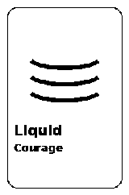

Liquid Courage
In breve - Liquid Courage è una variante di [Impromptu Networking](/structures/impromptu-networking/) per far emergere lamentele croniche in modo giocoso e sicuro. Ogni persona completa frasi tipo "Sarebbe fantastico se..." e "La mia lamentela è...", poi ne parla in tre round veloci con partner diversi prima di cercare pattern in plenaria.
- Durata
- 15 minuti
- Difficoltà
- Intermedia
- Gruppo
- da 6 a 30 persone
- Fase
- Multi fase
Domanda da portare
- "Sarebbe fantastico se nel nostro team..."
- "La mia lamentela cronica su questo processo è..."
- "Un piccolo passo che potrei fare nonostante il problema è..."
Cosa ti serve
- Frasi-starter su slide o cartelloni visibili.
- Spazio per muoversi e trovare partner.
- Campanello per i cambi round (2 minuti per conversazione).
- Post-it opzionali per raccogliere pattern in plenaria.
I passaggi
Presenta le frasi da completare e le regole (ascolto, niente consigli non richiesti)
2 minOgnuno abbozza la propria lamentela e un "sarebbe fantastico se"
2 minTre round da 2 minuti ciascuno con partner diversi
6 minPlenaria: quali pattern di lamentele emergono? Quali azioni al 15%?
5 min